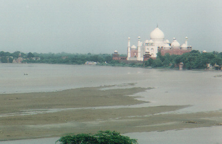
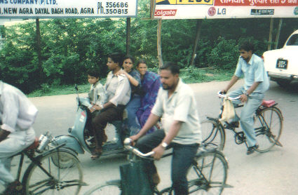

. 
Agra
I am up early at 630 to catch a tour bus to Agra, four hours to the southeast. We stop at many 5 star luxury hotels to pick up more tourists. These buildings make Hotel 55 look like a Tibetan parachute tent …………… although I still prefer 55. I have decided to book a day trip to the Taj Mahal. If you go to India do not miss it. Even if it is out of your way you will not regret the experience.
The fellow next to me is a Dutch KLM 747 flight engineer, with his daughter on a layover. There are people from 20 different countries on the bus. We drive through the green countryside, very flat. Many amusing vehicles go by including some Tata trucks that are just a chassis and steering wheel, being driven to the next factory for bodywork I guess. We stop at another hotel for cold drinks halfway down.
.
Entering the Taj gate Inside looking back
We enter Agra and park, then are taken to the Taj Mahal on a smaller bus. At the first entrance Indian army soldiers search every bag. He feels my coat pockets and asks what the lump is……… peanuts. No, they can’t go in so I drop them into a big garbage bin next to the line. There is lots of other food in it. Maybe this is lunch for the army !
Taj Mahal
It is 38 degs C and high humidity, same as in Delhi most days. We walk across the shady paths towards a large ornate gateway. When you walk through this you are standing at the end of the famous picture you see all over the world. It is a long way to the Taj and as I get closer I am amazed that it is much bigger than you expect in real life. The dome alone is 80 meters high. Our guide tells us the history of the Taj, and explains that the towers are built leaning out slightly so that an earthquake would not topple them into the main temple. All 4 towers are closed now. Three have seen suicides in the past, one by a couple who were not allowed to marry. The fifth mughal emperor Shah Jehan took 22 years to build this monument to his 2nd wife, Mumtaz Mahal. It was a love match, and she stayed with him for 18 years on all his journeys and military expeditions. She died giving birth to her 14th child. His subjects loved her as well, and twenty thousand people laboured to perpetuate her memory. It was finished in 1653.
Yamuna River
"Taj Mahal" (usually translated as either "Crown Palace" or "Crown of the Palace") is an abbreviated version of her name, Mumtaz Mahal (Exalted One of the Palace). Our guide tells us that the emperor’s plans were to build a black monument across on the other shore of the Yamuna River for his own resting place, but it was not to be……..
“A power struggle among his sons ensued, and eventually, the ruthless prince Aurangzeb deposed Shah Jehan in a coup d'etat in 1658. Shah Jehan was imprisoned in the Octagonal Tower of the Agra Fort (a beautiful addition to the fort that he himself had constructed) and would remain there until his death, eight years later, in 1666. He was then buried next to his wife, Mumtaz Mahal, in the Taj Mahal, two kilometers down river from the fort.
We take off our shoes and climb up the stairs onto the main plaza that surrounds the Taj. Inside is a very ornate marble tomb surrounded by an intricately carved marble fence, like lacework. The real bodies are buried in another tomb one floor below. These ones, built at the same time, are just a representation of the actual crypt.
I marvel at the inlaid stone designs on the outside walls, how the writing uses forced perspective, larger at the top so it all looks equally sized from below. The six sided pillars have a herringbone pattern that produces an optical illusion, they look like a 12 sided star, even from only a few feet away. As we leave the grounds I have a feeling that this is the most beautifully laid out and proportioned feat of architecture I will ever see.
Next we travel to the the Agra fort and visit this huge red sandstone complex. We stand inside the room where he was imprisoned and the guide shows us a small hole in a pillar. Pried out of it long ago was a precious stone which acted as a correction lens for his failing eyesight. Through it he could gaze on the Taj Mahal in the distance where his wife was buried.

Looking from the fort
Our last stop (no surprise to me) is a marble factory where craftsmen create inlaid tabletops of every size and shape for export . We are shown how they inlay the small coloured flats of stone by hand, and walk through a huge showroom. Prices range from a few dollars for glass coasters to $ 15,000 for huge tabletops. This is beautiful work but far beyond my tastes. They will ship anywhere in the world and are eager to sell.
.
Off we go back to Delhi. I manage to get a picture of a family of four on a Vespa scooter, although I did see five from the bus window. We stop for supper at the same hotel again and the buffet is another work of art. Coming from the trip to Ladakh I really feel the contrast from my tenting days. I get home at about 11pm. For about $ 40 US it has been an amazing day and well worth it.

Day
24:
Last full day
Today I take it easy. I spend the morning walking around Connaught Circle. I eat breakfast again at Nirula’s restaurant, then go to DishNet and for 90 rupees ($2) an hour I use a fast internet. It is air conditioned and has thirty computers. In seconds I am into hotmail in California, and then extract my house mail from Nova Scotia through hotmail…….. sure do love this technology !
In the afternoon I find a barber shop and get the full meal deal. Wash,
cut, then a ten minute full scalp massage…… zzzzzzzzzzzz. These guys
are good. That runs 90 rupees and he spends at least half an hour on me.
Day
25:
The Lotus Temple and home
Tonight I will fly home. I have arranged for the same Sikh driver to take care of me today, he is attached to the hotel as a freelancer. First I go to settle my bill at the front desk. The manager gets my balance, I calculate it should be 3 nights at 1100 rupees per night, about $75 total. He says that they owe me 1100 rupees. It turns out that Peter has prepaid the group rooms and there was extra left over so I will only need to pay for two nights. This is typical of my whole time in India, but again I am surprised. How many hotels would volunteer that information ? Peter told me very early that this hotel has never let him down and now I believe it. They are efficient, well priced and HONEST.
My driver takes me and my bags to the Baha’i Lotus Temple where I want to spend the afternoon. He will return later and take me to the airport. We have a nice drive south into the suburbs and I leave him at the gates and walk into the gardens. There are many people coming in by the bus load. The Lotus Temple has had 50 million visitors to date, more than the Eiffel Tower and even the Taj Mahal. On one day alone it set a record of 150,000.
I have only seen two other Baha'i temples, in Sydney, Australia and in Wilmette, Chicago. This is the most spectacular of this faith's nine sided temples. It was built between 1980 and 1987 to resemble a lotus flower and designed by a Canadian architect who was born in Iran, Mr. Fariburz Sahba. It is 200 feet in diameter and 100 feet high. The petals are made of white concrete. On the exterior the petals are clad in white Greek marble panels. It is surrounded by nine reflecting pools.
I spend the afternoon inside the large prayer hall which can hold 1300 people, and walking around the 26 acre grounds. The staff is very friendly and I spend some time in the library talking with a Baha'i from Africa who has taught with a Canadian friend of mine at the Baha'i school in India.
Before I know it my taxi driver has returned and comes looking for me in the temple. We carry my baggage out together and head off to the airport. I am early, my plane leaves at 2am but I don't mind waiting. I won't be bored, there are always lots of people to watch in India !
We are driving down a crowded boulevard, 3 lanes on each side. The traffic is very heavy and not moving more than 30 mph. There are cows eating grass on the centre divider here and there, you see them anywhere in the city. Suddenly the cars and trucks ahead are going beserk, all over the road trying to avoid something. My driver starts muttering and getting ready. Out of the mayhem ahead emerge two cows. They are running down the road straight at us , one on top of the other hanging on for dear life. We manage to miss them as they gallop by on 6 legs. Everyone breathes a sigh of relief.......... the expression " Better to run down your own mother than hit a cow. " has a lot of truth to it. If 5 ton trucks can miss them on a city street then the motivation must be very high !
I sit in the airport terminal for a few hours and watch life around me. People fly out with parcels, some too large to go through the x-ray machine. I see one lady with a cardboard box the size of a small kitchen table that keeps sliding off her trolley on the way to the check-in desk. Later in the cafeteria I watch the sun go down. It disappears into the brown haze long before it sets, a small glowing red ball. I know it's time to go home.
When I think back Delhi has been more fun than I ever expected. The trip to Ladakh will be a biking memory forever. Everywhere I went the people were great. I am constantly amazed at the friendliness and the Tibetans are phenomenal. Yes, you may get the occasional stomach problems, strange food (usually very good) , and in your face street hawkers or people begging, but to me, India is still another planet. If you enjoy life there as you wander through it, appreciate the people, the colours, the smells and the sounds, you will have a good time.